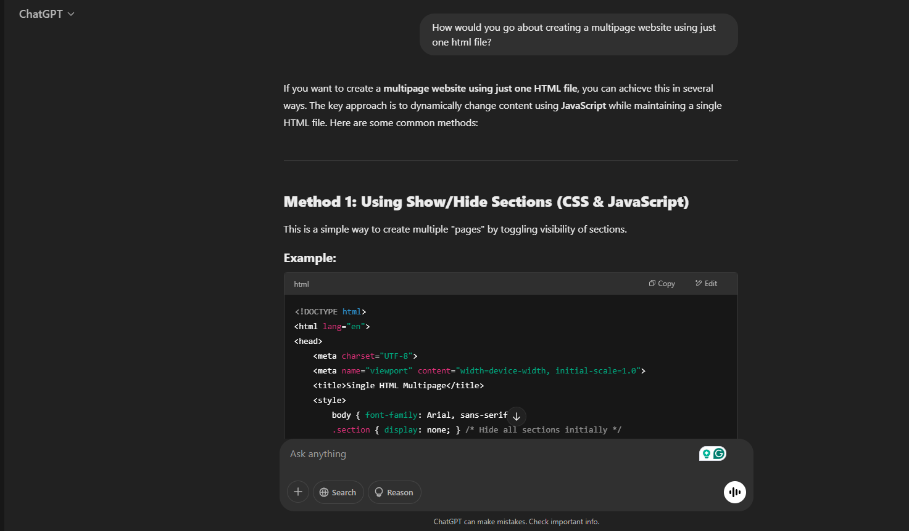
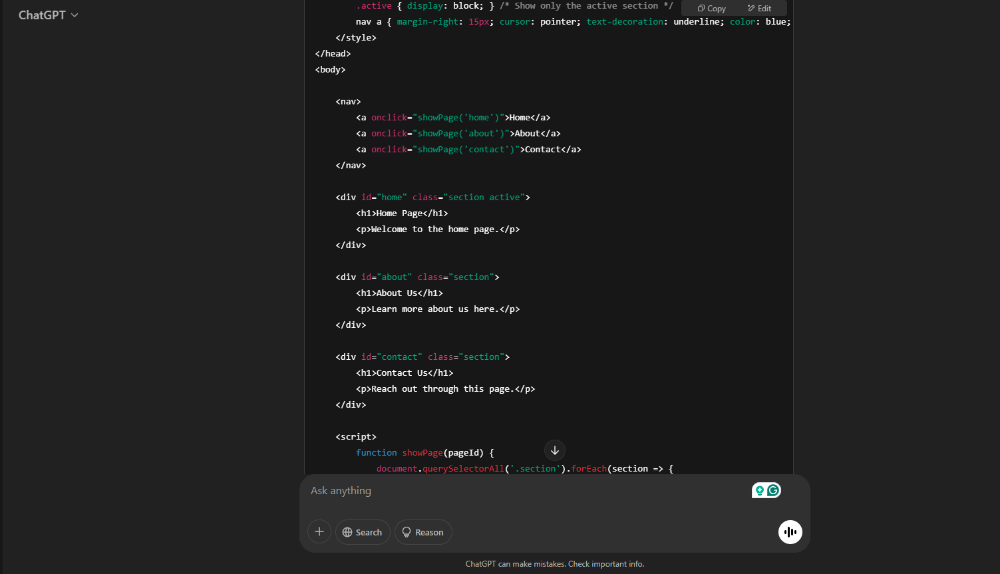
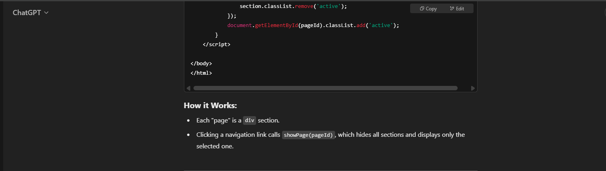

About Me🧑🏿
My name is Rafiq Greene and I am the creator of this site. I first started playing games when I was 3 years old with my first real gaming console being a xbox 360 my uncle gave me and ever since I've been playing games be it from action to stealth to horror, I play a lot of different of genres of games and really have a love for the medium as a whole both for the enjoyment the gameplay of the various games provide but as well as the stories.
I created this site in order to help people just getting into gaming by giving them all of the information they may possibly need to begin.Now you might laugh or scoff at the idea of such a site existing if you've been partaking in games for as long as I have but think about it from an outsider's perspective, the medium of gaming can be a but menacing to get into if you have absolutely zero knowledge of video games and how they work and what you need to make them function so that's why I've created this site to help ease a newbie's way into the scene.
Home🏠
Welcome to the site, Gamehead is a site about games for people who may be new to the medium whilst also giving some of my personal reccomendations and suggestions on various topics be it for future game releases that will be happening soon, to maybe what platform or storefront to go about using for your new gaming needs.
On the site I go over somethings that new gamers may not know much about like how to play games, where to buy games, and why you should consider playing games. Despite this being a site for beginners however it is very much likely you may need to do some additional research which is fine because the intention of this is more of a jumping off point for people fresh to the scene rather than a place for knowledge on everything gaming.
Future Game Releases To Look Out For📅
Metal Gear Solid Delta:Snake Eater(Publisher:Konami, Release Date: August 26th, 2025): If you're interested in a stealth based spy action Thriller i'd highly reccomond this gaming classic being remade from the ground up for modern game platforms with refined elements,mechanics, & features from previous re-releases of the game being added in to make this the definitive version of Metal Gear Solid III: Snake Eater.
Silent Hill F:(Publisher:Konami, Release Date: Currently Unknown): If you're interested in a survival horror game set in 1960s japan from one of the best survival horro franchises in all of gaming then I highly recommned keeping a look out for this title. Whilst very little is known about the game currently it has a promising possibility of being something great, especially after the release of the Silent Hill 2 Remake released by Konami last October.
How to Play Games🕹️
The number one thing that is required in order to play video games is a system to run it. The sytems vary mainly between two different sorts of platforms which are PCs and Home Consoles. Home consoles would be consoles like Xbox, Playstation, and Nintendo. The home consoles each have their pros of getting certain games exclusive to their platiform bit the con of not being highly customizable in terms of things like settings. PC has the pro of being highly customziable both in terms of parts that can make games run better than their console counterparts but also in terms of game settings and game mods which let you add in games not normally available within a given game. PC gaming's cons show through things like being higher priced than the average home console but as well as games for PC more times than not releasing in a broken state whilst the home console version of the game works fine.If you're asking me which platform to go with I'd say do some further research and pick whichever platform's proformance, games, and quirks most appeal to you.
Another aspect involved when understanding how to play games is understanding the formats which all games come in Physical and Digital. The difference between the two formats are with Physical games you physically own the game which means you can do whatever you want with it so if you wanted to sell or loan it to a friend you could do that but with digital games while you do get the conivence of not having to order the game to be delivered leaving your home to go to the store, and having all your games on system so their boxes don't take up physical space you are only given a license from the storefront you purchase the game from.A license which can be revoked at any time which means you could pay for a game and completly lose access to it despite the money you spent on it. Additionally because you own the games digitally you can not share,sell, or even go to different marketplaces to get a copy of the game cheaper like you can with physical games. If you want my suggestion I say try to always get games physically that way you truly own them.
Where to Purchase games🛍️
You can purchase games from most retail stores like Walmart,Target,Amazon,Etc. but as well from game specific stores like Gamestop. Gamestop has been the go to place for purchasing games for the past 20+ years and while I definitely would advise against trying to trade something in at the store (9 times out of 10 you're going to get ripped off), it's perfectly fine and viable place to purchase games from especiallyif you are just getting started.I must also mention however, that depending on your location there may even be local game stores within your area.
Additionally if you want to purchase games digitally you'd have to buy from your consoles designated store but if you are on PC you have many different places to choose from like Epic Games Store, GOG, and most importantly, the best marketplace for a PC owner, Steam.I particularly highlight Steam out of the bunch as out of those services steam has one of the most expansive game libraries whilst also having really good customer service, refund polices, and their infamous sales which can let you buy many games for dirt cheap.
Why Play Games❓
Why play games? In my opinon there's two reasons why I believe more people should play games. One reason why I think people should play is because they're fun. It's fun to partake in a game's gameplay and learn the ins and outs of the mechanics in order to become more proficient at the game which let's you have even more fun.
Another reason people should play games is because the story featured within games. I particularly highlight the stories of games for this part because there's games with stories on par with movies and tv shows but as well because when you're first getting into games it might be best to play a game with a heavy emphasis on story because even you may be struggling with the gameplay of a game, if the story is intriguing enough you will more times than not endure and become better at the game in order to find out what happens next.
AI Prompt🤖
This AI Prompt page is here because I used ChatGPT in order to get the code to create a multipage website using just one html file and have comments throughout my code indicating what came ChatGPT
To be specific, The code I used was the code for the script element section, navbar element section, .active CSS code, and the .section display CSS code.
  